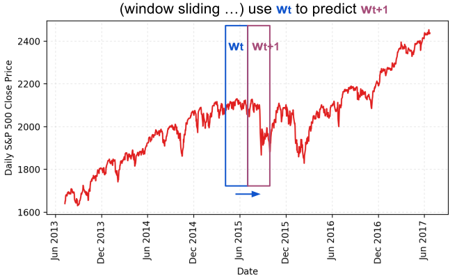
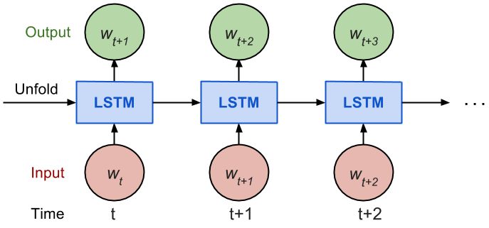
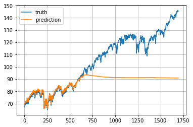
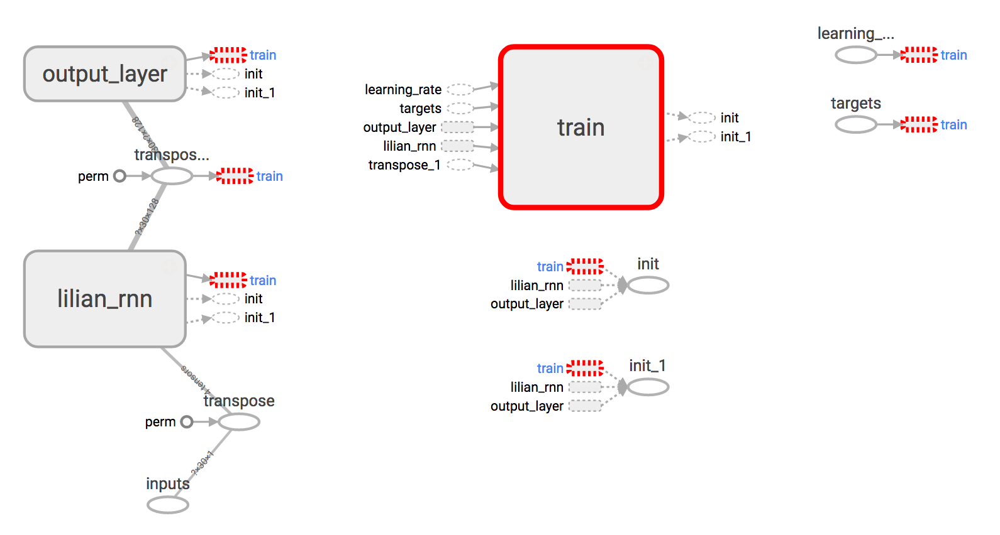
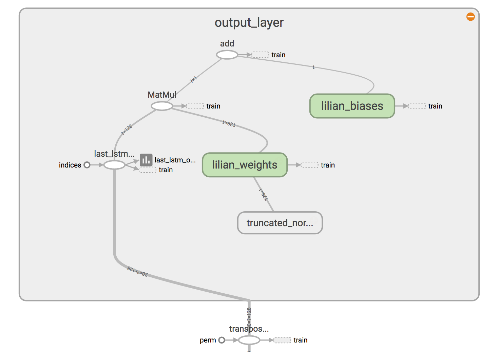
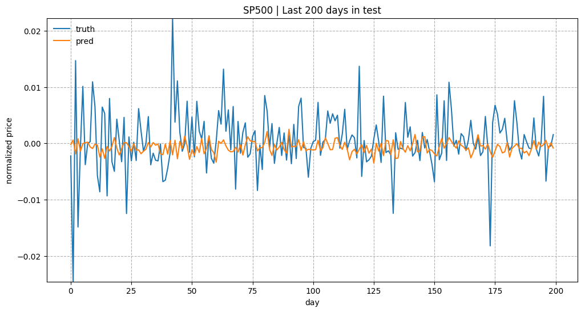
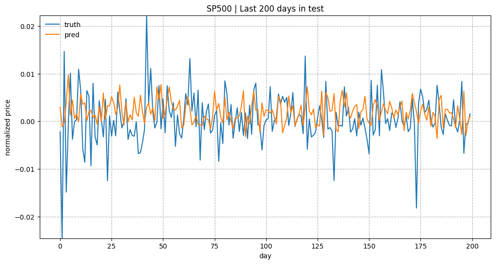
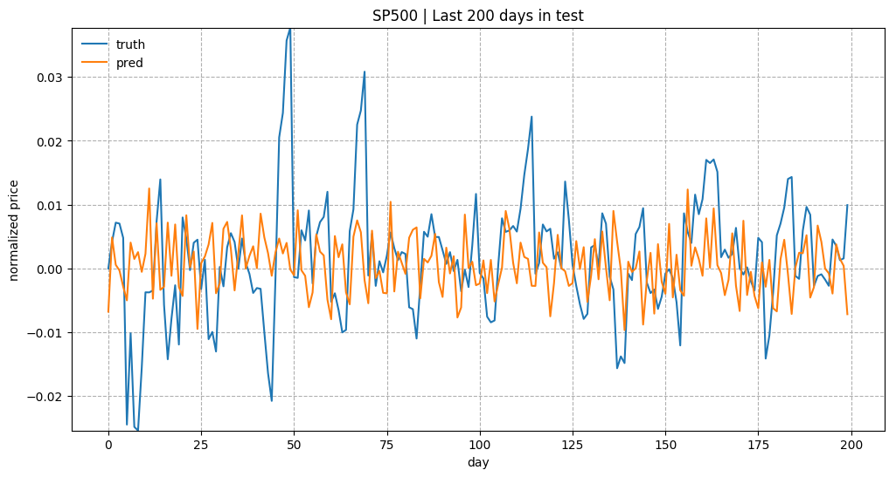

目录
这是一篇使用 Tensorflow 构建循环神经网络（RNN）来预测股市价格的教程。完整的可运行代码可在 github.com/lilianweng/stock-rnn 获取。如果你还不了解什么是循环神经网络或 LSTM 单元，可以先阅读。深度学习概览：适合好奇之人的入门指南
我想特别强调的是，写这篇文章的主要目的是展示如何用 Tensorflow 构建和训练一个 RNN 模型，而非全力解决股票预测问题，因此我并未在提升预测效果上花费太多精力。欢迎大家以我的代码为基础，加入更多与股票预测相关的想法来进一步改进它。祝玩得开心！
现有教程概览#
互联网上已经有很多相关的教程，例如：
尽管已有这么多教程，我还是想再写一篇，主要有三个原因：
在阅读了大量示例之后，我建议大家从 Tensorflow 官方在 Penn Tree Bank (PTB) 数据集上的示例作为起点。该示例以优雅且模块化的方式展示了 RNN 模型，但这种设计也可能让初学者难以快速理解模型结构。因此，我在这里会以非常直观的方式一步步构建计算图。
目标#
我将讲解如何构建一个基于 LSTM 单元的 RNN 模型来预测标普 500 指数（S&P500）的价格。数据集可从Yahoo! Finance ^GSPC下载。在下面的示例中，我使用了从 1950 年 1 月 3 日（Yahoo! Finance 能追溯到的最早日期）到 2017 年 6 月 23 日的标普 500 数据。该数据集每天提供多个价格点，为简化起见，我们仅使用每日收盘价进行预测。同时，我还会演示如何使用TensorBoard来进行更便捷的调试和模型跟踪。
简单回顾一下：循环神经网络（RNN）是一种在隐藏层具有自循环结构的人工神经网络，这使得 RNN 能够利用隐藏神经元之前的状态，结合新的输入来学习当前的状态。RNN 非常适合处理序列数据。长短期记忆（LSTM）单元是一种特殊设计的计算单元，能帮助 RNN 更好地记住长期的上下文信息。
想要深入了解更多内容，请阅读或这篇精彩的文章。深度学习概览：适合好奇之人的入门指南
数据准备#
股价是一个长度为 N 的时间序列，可记为 p_0, p_1, \dots, p_{N-1}，其中 p_i 表示第 i 天的收盘价，0 \le i < N。想象我们有一个固定大小为 w（后面称为 input_size）的滑动窗口，每次将窗口向右移动 w 个单位，确保所有滑动窗口之间的数据没有重叠。

我们即将构建的 RNN 模型以 LSTM 单元作为基本的隐藏单元。我们使用从第一个滑动窗口 W_0 开始，一直到时间 t 的窗口 W_t 的所有数据：
来预测接下来窗口 w_{t+1} 中的价格：
本质上，我们是在学习一个近似函数 f(W_0, W_1, \dots, W_t) \approx W_{t+1}。

考虑到通过时间反向传播（BPTT）的工作原理，我们通常以“展开”的形式训练 RNN，这样就不需要将梯度传播得太远，从而简化训练过程。
以下是 Tensorflow 官方教程中对 num_steps 的解释：
按照设计，循环神经网络（RNN）的输出依赖于任意远的过去输入。不幸的是，这使得反向传播计算变得非常困难。为了让学习过程易于处理，通常的做法是创建一个“展开”版本的网络，其中包含固定数量（num_steps）的 LSTM 输入和输出。然后模型就在这个有限的 RNN 近似版本上进行训练。具体实现方式是每次输入长度为 num_steps 的序列，处理完一个块后进行一次反向传播。
价格序列首先被分割成不重叠的小窗口，每个窗口包含 input_size 个数值，并被视为一个独立的输入元素。然后将任意 num_steps 个连续的输入元素组合成一个训练样本，形成一个“展开”的 RNN 版本供 Tensorflow 训练。其对应的标签是紧随其后的那个输入元素。
例如，当 input_size=3 且 num_steps=2 时，前几个训练样本如下所示：
下面是数据格式化处理的核心代码：
seq = [np.array(seq[i * self.input_size: (i + 1) * self.input_size])
for i in range(len(seq) // self.input_size)]
# Split into groups of `num_steps`
X = np.array([seq[i: i + self.num_steps] for i in range(len(seq) - self.num_steps)])
y = np.array([seq[i + self.num_steps] for i in range(len(seq) - self.num_steps)])
完整的数据格式化代码可在此查看。
训练 / 测试集划分#
由于我们始终希望预测未来，我们将最近的 10% 数据作为测试集。
归一化#

标普 500 指数随时间不断上涨，这导致测试集中的大部分数值会超出训练集的数值范围，使得模型不得不预测它从未见过的数据。不幸且不出所料的是，预测效果会非常糟糕。见 图 3 当 RNN 模型需要预测超出训练数据范围的数值时，一个非常糟糕的例子。
为了解决数值范围不一致的问题，我对每个滑动窗口内的价格进行归一化处理。这样任务就变成了预测相对变化率，而不是绝对价格值。在时间 t 的归一化滑动窗口 W’_t 中，所有数值都除以最后一个已知价格——即 W_{t-1} 中的最后一个价格：
这里提供一个我爬取的截至 2017 年 7 月的标普 500 股价数据压缩包stock-data-lilianweng.tar.gz，欢迎大家下载玩耍 :)
模型构建#
参数定义#
该 LSTM 模型包含 num_layers 层堆叠的 LSTM 层，每层包含 lstm_size 个 LSTM 单元。随后在每个 LSTM 单元的输出上应用一个dropout掩码，保留概率为 keep_prob。dropout 的目的是消除对某一维度过于强烈的依赖，从而防止过拟合。
整个训练过程共需要 max_epoch 个周期；一个epoch是指对所有训练数据进行一次完整的遍历。在每个周期内，训练数据被划分成大小为 batch_size 的 mini-batch。我们每次向模型输入一个 mini-batch 进行 BPTT 学习。在前 init_epoch 个周期中，学习率固定为 init_learning_rate，之后每个周期都按 \times learning_rate_decay 进行衰减。
# Configuration is wrapped in one object for easy tracking and passing.
class RNNConfig():
input_size=1
num_steps=30
lstm_size=128
num_layers=1
keep_prob=0.8
batch_size = 64
init_learning_rate = 0.001
learning_rate_decay = 0.99
init_epoch = 5
max_epoch = 50
config = RNNConfig()
定义计算图#
tf.Graph 本身不包含任何真实数据。它定义了数据应如何被处理以及计算应如何进行。随后，这个图可以在tf.session中被真实数据填充，此时才会真正发生计算。
—— 让我们开始阅读一些代码 ——
(1) 首先初始化一个新的计算图。
import tensorflow as tf
tf.reset_default_graph()
lstm_graph = tf.Graph()
(2) 图的具体工作方式应该在其作用域内进行定义。
with lstm_graph.as_default():
(3) 定义计算所需的数据。这里我们需要三个输入变量，都定义为tf.placeholder，因为在构建计算图阶段我们还不知道它们具体的值是什么。
# Dimension = (
# number of data examples,
# number of input in one computation step,
# number of numbers in one input
# )
# We don't know the number of examples beforehand, so it is None.
inputs = tf.placeholder(tf.float32, [None, config.num_steps, config.input_size])
targets = tf.placeholder(tf.float32, [None, config.input_size])
learning_rate = tf.placeholder(tf.float32, None)
(4) 这个函数返回一个带或不带 dropout 操作的LSTMCell。
def _create_one_cell():
return tf.contrib.rnn.LSTMCell(config.lstm_size, state_is_tuple=True)
if config.keep_prob < 1.0:
return tf.contrib.rnn.DropoutWrapper(lstm_cell, output_keep_prob=config.keep_prob)
(5) 如果需要，我们可以将这些单元堆叠成多层。MultiRNNCell 可以帮助将多个简单单元按顺序连接起来组成一个复合单元。
cell = tf.contrib.rnn.MultiRNNCell(
[_create_one_cell() for _ in range(config.num_layers)],
state_is_tuple=True
) if config.num_layers > 1 else _create_one_cell()
(6) tf.nn.dynamic_rnn 根据给定的 cell（RNNCell）构建循环神经网络。它返回一个（模型输出, 状态）的元组，其中输出 val 默认形状为 (batch_size, num_steps, lstm_size)。这里的 state 指的是 LSTM 单元的当前状态，在本例中并未使用。
val, _ = tf.nn.dynamic_rnn(cell, inputs, dtype=tf.float32)
(7) tf.transpose 将输出从 (batch_size, num_steps, lstm_size) 维度转换为 (num_steps, batch_size, lstm_size)。然后取出最后一个时间步的输出。
# Before transpose, val.get_shape() = (batch_size, num_steps, lstm_size)
# After transpose, val.get_shape() = (num_steps, batch_size, lstm_size)
val = tf.transpose(val, [1, 0, 2])
# last.get_shape() = (batch_size, lstm_size)
last = tf.gather(val, int(val.get_shape()[0]) - 1, name="last_lstm_output")
(8) 定义隐藏层和输出层之间的权重和偏置。
weight = tf.Variable(tf.truncated_normal([config.lstm_size, config.input_size]))
bias = tf.Variable(tf.constant(0.1, shape=[config.input_size]))
prediction = tf.matmul(last, weight) + bias
(9) 我们使用均方误差作为损失函数，并采用RMSPropOptimizer 算法来进行梯度下降优化。
loss = tf.reduce_mean(tf.square(prediction - targets))
optimizer = tf.train.RMSPropOptimizer(learning_rate)
minimize = optimizer.minimize(loss)
启动训练会话#
(1) 要开始用真实数据训练计算图，我们首先需要启动一个tf.session。
with tf.Session(graph=lstm_graph) as sess:
(2) 初始化之前定义的变量。
tf.global_variables_initializer().run()
(0) 各训练周期对应的学习率应该事先计算好。索引对应周期序号。
learning_rates_to_use = [
config.init_learning_rate * (
config.learning_rate_decay ** max(float(i + 1 - config.init_epoch), 0.0)
) for i in range(config.max_epoch)]
(3) 下面的每个循环完成一个周期的训练。
for epoch_step in range(config.max_epoch):
current_lr = learning_rates_to_use[epoch_step]
# Check https://github.com/lilianweng/stock-rnn/blob/master/data_wrapper.py
# if you are curious to know what is StockDataSet and how generate_one_epoch()
# is implemented.
for batch_X, batch_y in stock_dataset.generate_one_epoch(config.batch_size):
train_data_feed = {
inputs: batch_X,
targets: batch_y,
learning_rate: current_lr
}
train_loss, _ = sess.run([loss, minimize], train_data_feed)
(4) 别忘了在训练结束时保存训练好的模型。
saver = tf.train.Saver()
saver.save(sess, "your_awesome_model_path_and_name", global_step=max_epoch_step)
完整代码可在此处获取。
使用 TensorBoard#
在没有可视化的情况下构建计算图就像在黑暗中作画，非常模糊且容易出错。TensorBoard 提供了对计算图结构和训练过程的便捷可视化。推荐观看这个动手教程，仅 20 分钟，却非常实用并展示了多个实时演示。
简要总结
with tf.Session(graph=lstm_graph) as sess:
merged_summary = tf.summary.merge_all()
writer = tf.summary.FileWriter("location_for_keeping_your_log_files", sess.graph)
writer.add_graph(sess.graph)
之后，将训练进度和汇总结果写入该文件。
_summary = sess.run([merged_summary], test_data_feed)
writer.add_summary(_summary, global_step=epoch_step) # epoch_step in range(config.max_epoch)


完整的可运行代码可在 github.com/lilianweng/stock-rnn 获取。
实验结果#
我在实验中使用了以下配置。
num_layers=1
keep_prob=0.8
batch_size = 64
init_learning_rate = 0.001
learning_rate_decay = 0.99
init_epoch = 5
max_epoch = 100
num_steps=30
（感谢 Yury 发现我在价格归一化中的一个 bug。之前我错误地使用了同一个窗口内的最后一个价格，而不是前一个时间窗口的最后一个价格。以下图表已经修正。）
总体来说，预测股价并不是一件容易的事。尤其在进行归一化之后，价格趋势看起来非常嘈杂。



本教程中的示例代码可在 github.com/lilianweng/stock-rnn:scripts 获取。
（2017 年 9 月 14 日更新） 模型代码已被封装到一个类中：LstmRNN。模型训练可通过 main.py 触发，例如：
python main.py --stock_symbol=SP500 --train --input_size=1 --lstm_size=128